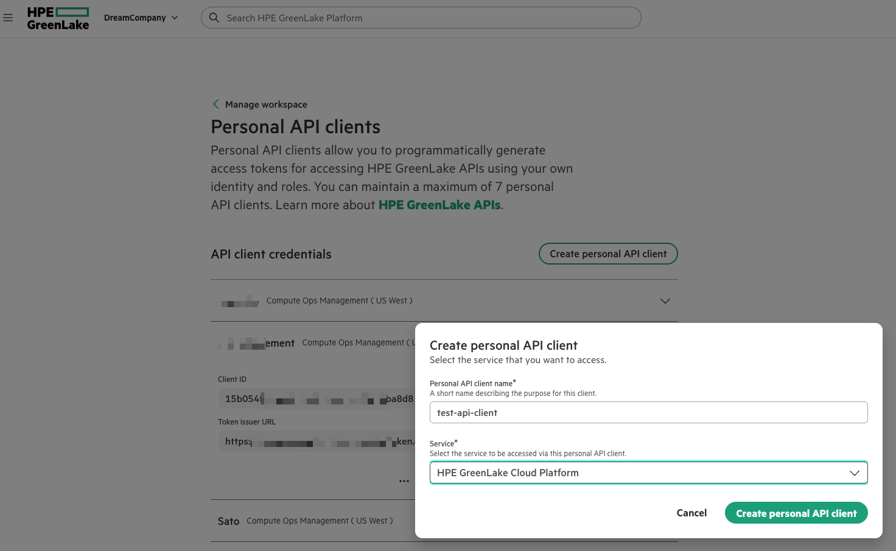
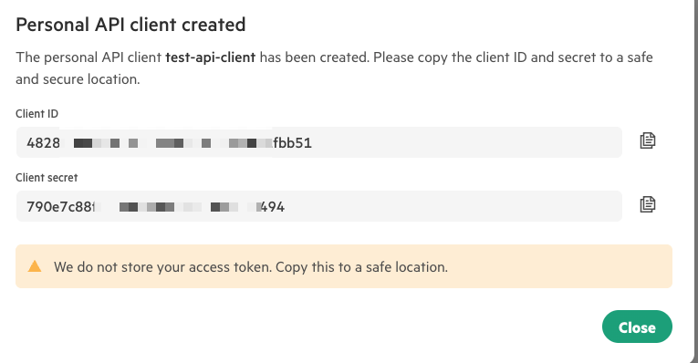

Monitoring HPE GreenLake Servers Running GPUs Using Grafana and Prometheus
Overview
HPE GreenLake Compute Ops Management provides a cloud-native platform for managing and monitoring compute infrastructure with built-in tools and dashboards. While Compute Ops Management offers comprehensive native monitoring capabilities, organizations can also leverage the Compute Ops Management REST API to integrate with popular open-source tools like Grafana and Prometheus. This approach enables teams to consolidate monitoring data across hybrid environments, utilize existing observability workflows, and create customized dashboards tailored to specific operational needs—particularly for GPU-accelerated workloads running on HPE servers.
Benefits of Grafana Cloud Integration
Grafana Cloud provides a centralized monitoring platform that bridges both public cloud APIs and private infrastructure metrics, offering several key advantages:
Unified Observability Across Hybrid Environments: - HPE GreenLake API Integration: Using the Infinity data source plugin, Grafana Cloud can directly query HPE GreenLake Compute Ops Management REST APIs to retrieve server health, firmware status, and hardware telemetry data from your public cloud-managed infrastructure - Internal Metrics Aggregation: Simultaneously receives GPU utilization, Kubernetes cluster metrics, and application performance data from your on-premises Prometheus instances via remote write protocol - Single Pane of Glass: Consolidates metrics from both HPE GreenLake-managed servers and local GPU workloads into unified dashboards
API Accessing HPE GreenLake Compute Ops Management
In order for Grafana Cloud to access HPE GreenLake Compute Ops Management, we need to first create client API user and obtain user secret. For details, please see HPE GreenLake access token instructions
The following screen shows the "Personal API endpoints" creation in the workspace dashboard. 
{kind=link}
You need to note down the client ID and secret so you can configure Grafana later using this information. 
{kind=link}
Infinity Data Source
The Grafana Infinity data source enables direct integration with HPE GreenLake REST APIs, allowing users to query and visualize data from any HTTP/REST endpoint without requiring custom backend development. Originally a community-driven plugin, Infinity was officially adopted by Grafana Labs and is now maintained as part of the core Grafana ecosystem. This transition ensures long-term support, regular updates, and better integration with Grafana's authentication frameworks.
Key capabilities include: - REST API integration - Query HPE GreenLake Compute Ops Management APIs directly from Grafana - OAuth2 authentication - Native support for token-based authentication flows - Data transformation - Parse JSON responses and transform them into visualization-ready formats
This Infinity plugin supports automatic token refresh when accessing HPE GreenLake Compute Ops Management.
The implementation leverages Go's built-in golang.org/x/oauth2 library, which automatically handles token
refresh logic when the access token expires. The OAuth2 token source automatically refreshes the access token
using the refresh token before making API requests, ensuring uninterrupted authentication without manual intervention.
{kind=link}
Grafana Cloud Dashboard
With the Infinity data source successfully configured, users can configure the dashboard to query information following the HPE Compute Ops Management API Guide
{kind=link}
Kubernetes and Helm Setup
Kubernetes cluster setup
This demonstration environment utilizes a high-availability Kubernetes cluster consisting of three control plane nodes and two worker nodes.
wsl=> k get node -o wide
NAME STATUS ROLES AGE VERSION INTERNAL-IP EXTERNAL-IP OS-IMAGE KERNEL-VERSION CONTAINER-RUNTIME
c2-cp-01.hst.enablement.local Ready control-plane 80d v1.32.5 10.16.160.51 <none> Ubuntu 22.04.5 LTS 5.15.0-144-generic containerd://2.0.5
c2-cp-02.hst.enablement.local Ready control-plane 80d v1.32.5 10.16.160.52 <none> Ubuntu 22.04.5 LTS 5.15.0-144-generic containerd://2.0.5
c2-cp-03.hst.enablement.local Ready control-plane 80d v1.32.5 10.16.160.53 <none> Ubuntu 22.04.5 LTS 5.15.0-144-generic containerd://2.0.5
c2-worker-01.hst.enablement.local Ready <none> 80d v1.32.5 10.16.160.54 <none> Ubuntu 22.04.5 LTS 5.15.0-144-generic containerd://2.0.5
c2-worker-02.hst.enablement.local Ready <none> 80d v1.32.5 10.16.160.55 <none> Ubuntu 22.04.5 LTS 5.15.0-144-generic containerd://2.0.5
Kubernetes namespace setup
The cluster is equipped with the gpu-operator namespace for NVIDIA GPU management and the monitoring namespace hosting the Prometheus stack, with external access enabled via NodePort services.
wsl=> kubectl get ns | grep -vE '^(kube-|default)'
NAME STATUS AGE
gpu-operator Active 80d
monitoring Active 56d
wsl=> k get svc -n gpu-operator
NAME TYPE CLUSTER-IP EXTERNAL-IP PORT(S) AGE
gpu-operator ClusterIP 10.233.44.80 <none> 8080/TCP 78d
nvidia-dcgm-exporter ClusterIP 10.233.15.59 <none> 9400/TCP 78d
wsl=> k get svc --field-selector spec.type=NodePort -n monitoring
NAME TYPE CLUSTER-IP EXTERNAL-IP PORT(S) AGE
kube-prometheus-stack-grafana NodePort 10.233.22.241 <none> 80:30080/TCP 56d
kube-prometheus-stack-prometheus NodePort 10.233.8.106 <none> 9090:30090/TCP,8080:30398/TCP 56d
Helm chart installation
The environment uses Helm to manage two key components: the NVIDIA GPU Operator for GPU resource management and the Kube Prometheus Stack for monitoring and observability.
wsl=> helm list -A
NAME NAMESPACE REVISION UPDATED STATUS CHART APP VERSION
gpu-operator-1753140595 gpu-operator 4 2025-08-14 19:20:42.329819669 -0700 MST deployed gpu-operator-v25.3.2 v25.3.2
kube-prometheus-stack monitoring 5 2025-08-15 13:06:31.169338089 -0700 MST deployed kube-prometheus-stack-76.3.
0 v0.84.1
GPU Operator chart customization
The NVIDIA GPU Operator Helm chart deploys a DCGM (Data Center GPU Manager) exporter by default, but there are important nuances:
-
The DCGM exporter Pod will be created automatically when the operator detects a node with an NVIDIA GPU and the dcgm-exporter component is enabled in its values.
-
In the stock gpu-operator Helm chart from NVIDIA's repository, the DCGM exporter is enabled by default (
dcgmExporter.enabled: true), but the ServiceMonitor is disabled by default (serviceMonitor.enabled: false). See the NVIDIA GPU Operator Documentation.

You can also verify these default built-in values using the helm show values command.
wsl=> helm show values nvidia/gpu-operator | grep -A 15 dcgmExporter
dcgmExporter:
enabled: true
repository: nvcr.io/nvidia/k8s
image: dcgm-exporter
version: 4.3.1-4.4.0-ubuntu22.04
imagePullPolicy: IfNotPresent
env: []
resources: {}
service:
internalTrafficPolicy: Cluster
serviceMonitor:
enabled: false
interval: 15s
honorLabels: false
additionalLabels: {}
relabelings: []
We need to enable the ServiceMonitor (dcgmExporter.serviceMonitor.enabled: true) in order for Prometheus to automatically scrape the DCGM exporter.
The gpu-operator is configured with custom values to enable Prometheus integration. The DCGM exporter runs as a ClusterIP service with ServiceMonitor enabled for automatic metrics discovery by Prometheus.
wsl=> helm get values gpu-operator-1753140595 -n gpu-operator
USER-SUPPLIED VALUES:
dcgmExporter:
service:
type: ClusterIP
serviceMonitor:
enabled: true
GPU utilization simulation
To simulate GPU load and verify monitoring functionality, we deployed a test pod running the gpu-burn utility. This tool performs intensive GPU computations, allowing us to observe GPU utilization metrics in our monitoring dashboards.
The following YAML manifest creates a pod that clones the gpu-burn repository, compiles it, and runs continuous GPU stress testing:
apiVersion: v1
kind: Pod
metadata:
name: gpu-burn
spec:
containers:
- name: gpu-burn
image: nvidia/cuda:12.2.0-devel-ubuntu22.04
command: ["/bin/bash", "-c"]
args:
- |
apt update && apt install -y git build-essential && \
git clone https://github.com/wilicc/gpu-burn.git && \
cd gpu-burn && make && ./gpu_burn 999999
resources:
limits:
nvidia.com/gpu: 1
restartPolicy: Never
Key configuration details:
- Base image: nvidia/cuda:12.2.0-devel-ubuntu22.04 provides the CUDA development environment
- GPU allocation: nvidia.com/gpu: 1 requests a single GPU from the cluster
- Runtime: gpu_burn 999999 runs for approximately 277 hours (effectively continuous)
- Restart policy: Never ensures the pod completes its run without automatic restarts
Deploy the pod using:
Grafana Cloud Integration
While the local Grafana deployment provides comprehensive monitoring capabilities, organizations often need to share dashboards with team members who cannot directly access the internal infrastructure. Grafana Cloud offers an ideal solution by enabling metrics to be pushed from the local Prometheus instance to a cloud-hosted environment, making dashboards accessible to remote teams without requiring VPN or direct network access.
Prometheus Remote Write
Grafana Cloud supports Prometheus remote write protocol, allowing local Prometheus to continuously push metrics to the cloud. This approach offers several advantages:
- No inbound firewall rules required - Metrics are pushed outbound from the lab
- Real-time data synchronization - Metrics appear in Grafana Cloud within seconds
- Selective metric filtering - Control which metrics are sent to manage costs
- Multi-cluster aggregation - Consolidate metrics from multiple environments
The integration involves two main steps:
- Configure Grafana Cloud credentials - Create a Prometheus remote write endpoint and API key in Grafana Cloud
- Update Prometheus configuration - Add remote write settings to the kube-prometheus-stack Helm values
Prometheus Remote Write Diagram
The following diagram from Grafana Cloud documentation shows the architecture of Prometheus remote write.
{kind=link}
How it works: 1. Prometheus scrapes metrics from all targets (DCGM exporter, kube-state-metrics, etc.) 2. Stores metrics locally in TSDB (Time Series Database) 3. Simultaneously pushes metrics to Grafana Cloud via remote write 4. Local Grafana and Prometheus UI can query local data 5. Grafana Cloud receives a copy of all metrics
Configure Grafana Cloud credentials
Users should log in to grafana.com to access their Grafana stack and retrieve the Prometheus cloud instance API endpoint by selecting "Details".

Select "Prometheus Details"

In the Prometheus Instance Details page, please note "Remote Write Endpoint", "Instance ID" and generate "API Token"

Updating Helm release with configured value
-
Create a Kubernetes secret to store the username and password to access the Prometheus cloud instance
wsl=> GRAFANA_CLOUD_USER="<your userid here>" wsl=> GRAFANA_CLOUD_PASSWORD="<you token here>" wsl=> kubectl create secret generic grafana-cloud-credentials \ --from-literal=username="${GRAFANA_CLOUD_USER}" \ --from-literal=password="${GRAFANA_CLOUD_PASSWORD}" \ -n monitoring secret/grafana-cloud-credentials created -
Create a Helm custom values YAML file
-
Upgrade the Helm release
Proliant Server Nvidia GPU utilization dashboard
The following screen shows the Grafana Cloud dashboard of HPE Proliant Server Nvidia GPU Utilization.

The corresponding server GPU utilization from nvidia-smi is shown below.
wsl=> ssh user01@c2-worker-02.hst.enablement.local nvidia-smi
Mon Oct 20 13:55:11 2025
+-----------------------------------------------------------------------------------------+
| NVIDIA-SMI 570.133.20 Driver Version: 570.133.20 CUDA Version: 12.8 |
|-----------------------------------------+------------------------+----------------------+
| GPU Name Persistence-M | Bus-Id Disp.A | Volatile Uncorr. ECC |
| Fan Temp Perf Pwr:Usage/Cap | Memory-Usage | GPU-Util Compute M. |
| | | MIG M. |
|=========================================+========================+======================|
| 0 NVIDIA L40S-4C On | 00000000:02:00.0 Off | 0 |
| N/A N/A P0 N/A / N/A | 3002MiB / 4096MiB | 99% Default |
| | | N/A |
+-----------------------------------------+------------------------+----------------------+
+-----------------------------------------------------------------------------------------+
| Processes: |
| GPU GI CI PID Type Process name GPU Memory |
| ID ID Usage |
|=========================================================================================|
| 0 N/A N/A 3712514 C ./gpu_burn 2997MiB |
+-----------------------------------------------------------------------------------------+